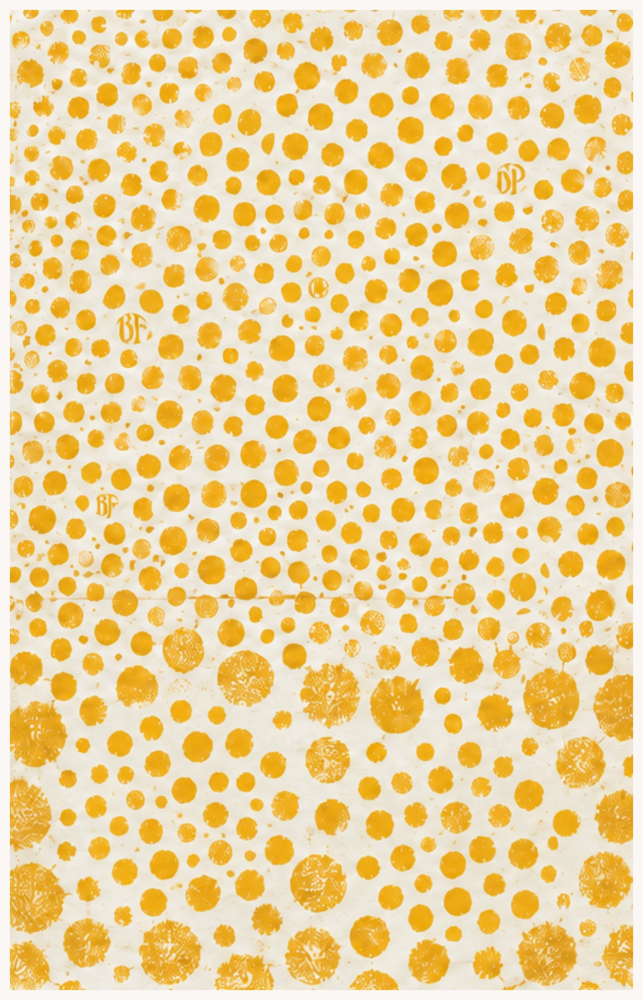
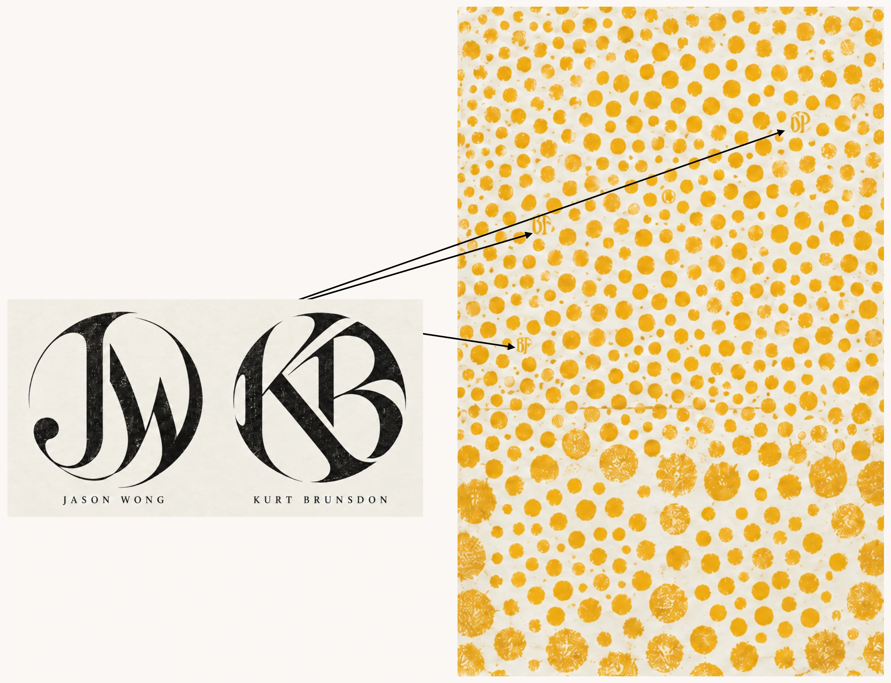
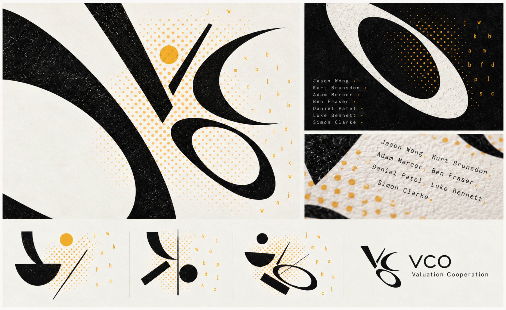
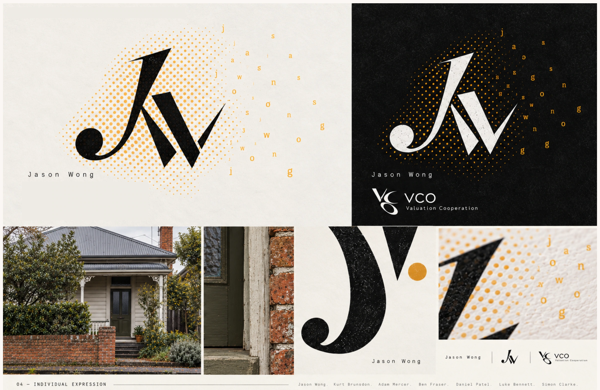
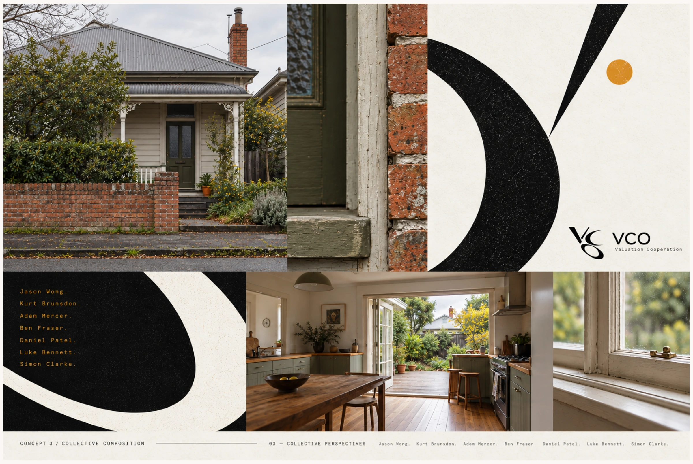
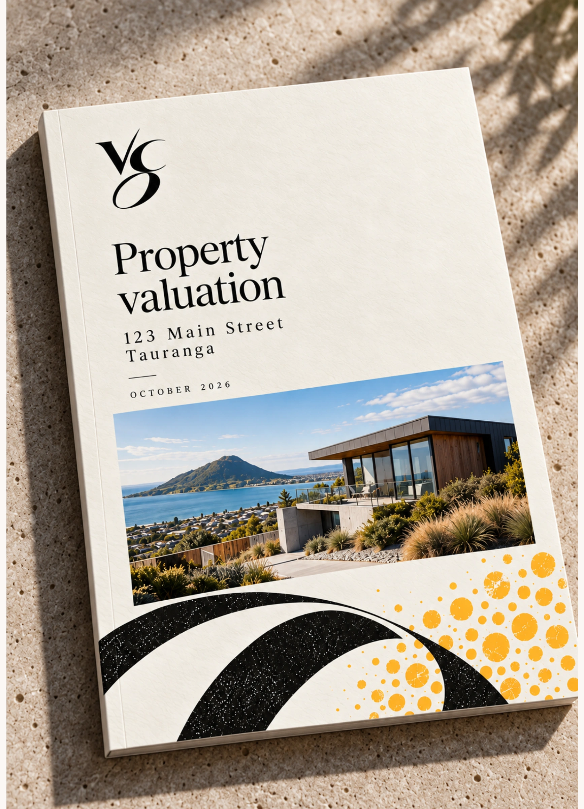
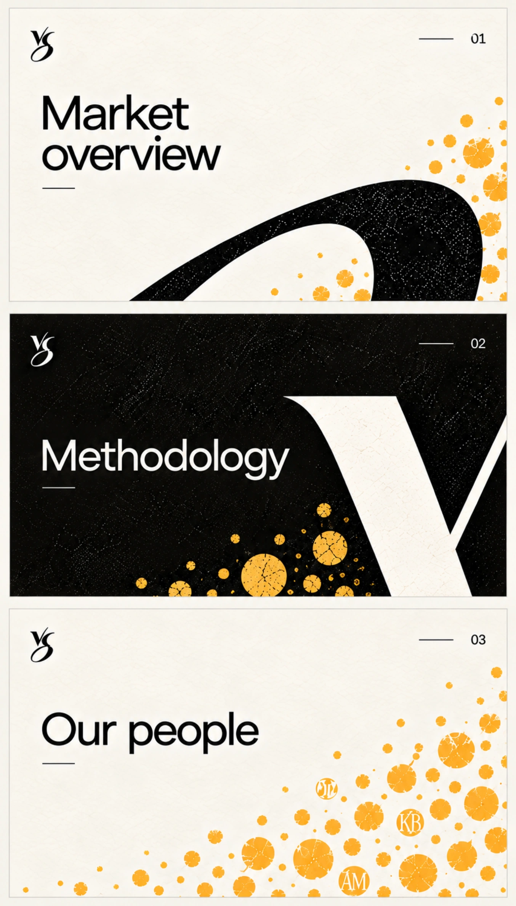
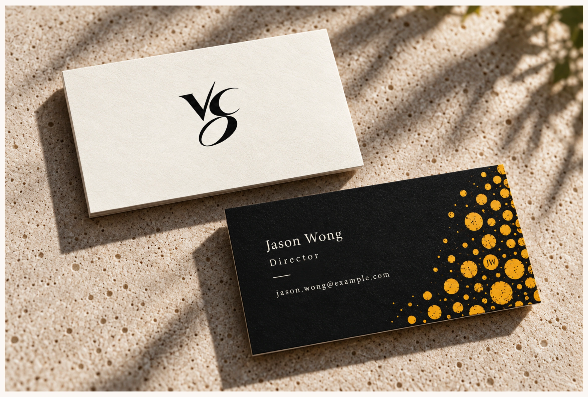
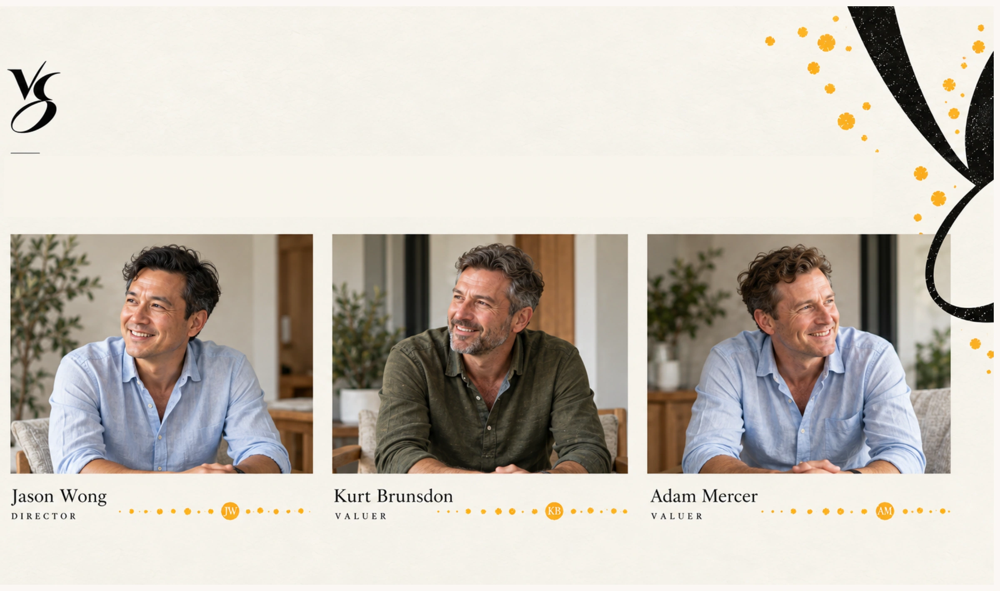

2
Collective
VCO is a collective of valuation experts. So what if the brand represents the feeling of the collective?









 Summary
SummaryVCO is a collective of valuation experts. So what if the brand represents the feeling of the collective?








